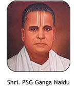
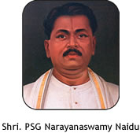
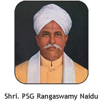
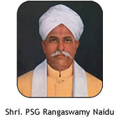

The Legacy of PSG
The story of the PSG Family is a saga of robust initiatives, enterprising thoughts and enlightened imagination, rooted soundly in far-sighted benevolence. Their benefactions in the field of education has a long standing significance, accorded with immense pride for entering into various ventures to promote advancements in technological and liberal learning in this part of the country for over nine decades now.
Significance of the name ‘PSG’
  

The origin of the family could be traced way back to its forebearer, Sri Venkatarama Naidu who belonged to the family of 'Periya Veedu' (The Big House). One of his sons was Sri Sama Naidu. PSG Family is the direct descendent of Sri Sama Naidu. The letter 'P' in the name 'PSG' signifies the name of the house and the 'S' stands for Sri Sama Naidu.Sri P S Govindasamy Naidu was one of the sons of Sri Sama Naidu and hence the third letter in the name ‘PSG’ signifies him. The founders propelled several charity expeditions through generations and have hence immortalized the name "PSG".
About PSG College of Arts & Science
PSG College of Arts & Science was founded in the year 1947 before independence by the PSG & Sons’ Charities Trust with a mission to set education on a noble perch accessible to all in pursuit of knowledge and world class education. The founders envisioned charity through education and crested this zealous thought as the reason for having set up a premier grade institution, which still remains as an untarnished thought through the lineage of successors to this college. The college embodies a rich tradition of excellence in teaching and research and has thus diffused dynamism and knowledge to several learners in the sands of time. The college upgrades its facilities available from time to time, to set up the best pedal of access for its students. The college has a long standing and a well established title for having harbored an excellent faculty resource in the city. The quality of education is carefully cradled to impart profound education to all who have knocked on the knowledge doors of the college with belief. The institution promotes deep research and lifelong learning in the fields of Arts, Sciences, Humanities, Management, Computer Science, Social Science and Life Sciences.
PSGCAS is one of the largest Higher Education Institutions of South India with 43 Undergraduate Programmes, 4 BVoc Programmes, 27 Postgraduate Programmes, 1 Five year Integrated Postgraduate Programme, 3 PG Diploma Programmes, M.Phil and Ph.D Programmes are offered in 24 Disciplines.
In addition to this, 12 Career Oriented Add-On courses are offered for enhancing the life skills of students.
Vision & Mission
Vision
" To offer Academic programmes with contemporary relevance and job - connect, with in-built modules for character and skill building ".
Mission
- To offer estimable value and need based education, with a view to create in students, the urge to be good citizens of the nation.
- To inculcate the spirit of compassion and commitment for national harmony.
- To progressively adopt ICT enabled Teaching - Learning methods.
- To maintain a vibrant research culture.